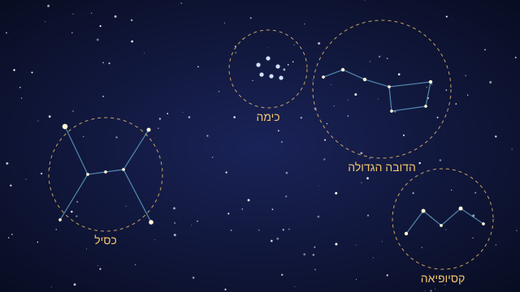
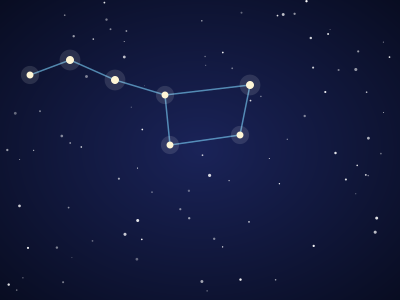
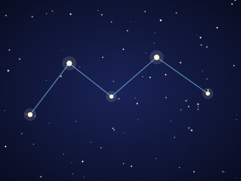
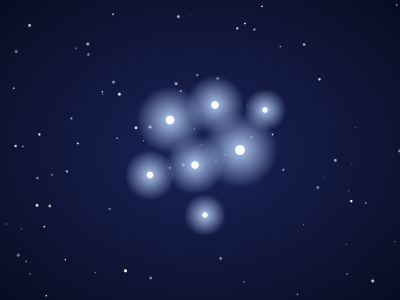
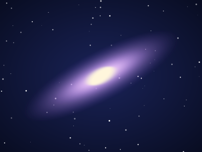
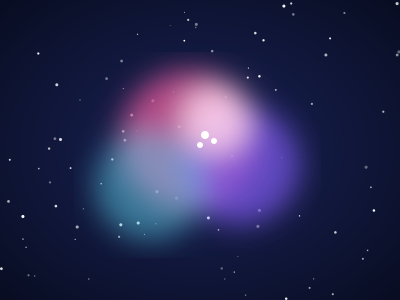

כסיל
קל לזיהוי בזכות שלושת כוכבי החגורה שלו הנמצאים בשורה אחת.
- סוג
- קבוצת כוכבים
- עונה מומלצת
- חורף
- צפייה
- בעין
Touch the Sky
קבוצות כוכבים, צבירים, ערפיליות וגלקסיות. לחצי על אזור במפת השמיים כדי לקפוץ אל הכרטיס שלו.

קל לזיהוי בזכות שלושת כוכבי החגורה שלו הנמצאים בשורה אחת.

שבעה כוכבים בצורת מחבט. שני הכוכבים בקצה הקערה מכוונים אל כוכב הצפון.

חמישה כוכבים שמרכיבים את האות W, שקל למצוא בשמי הצפון.

צביר כוכבים כחלחל. בעין רואים כמה כוכבים, ובמשקפת עשרות.

אחד העצמים הרחוקים ביותר שאפשר לראות בעין בלתי מזוינת, כתם אור אליפטי קלוש.

ענן גז צבעוני שנמצא בחרב של כסיל. בטלסקופ היא נראית כפרפר זוהר.